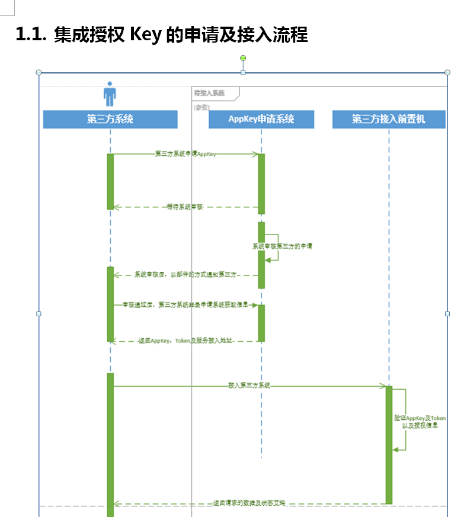

1. 集成内容
集成内容主要包括地图、位置、状态及消息相关数据，具体的集成方式包括 ZMQ 订阅和 REST API 两种方式， 下述接口中，CCS 服务路径为 http://192.168.253.161。
| 其中调用 REST API 接口时，需要进行安全访问验证，安全访问规则参 见第二章[2 REST-API 安全访问规则]。 |
1.1. 获取系统参数
| 名称 | 描述 | 类型 |
|---|---|---|
|
locationSubscribeIP |
实时位置数据订阅的 IP 地址 |
String |
|
locationSubscribePort |
实时位置数据订阅的端口号 |
String |
|
engineStatusSubscr ibeIP |
引擎实时状态数据订阅的 IP 地址引擎实时状态数据订阅的 IP 地址引擎实时状态数据订阅的 IP 地址引擎实时状态数据订阅的 IP 地址引擎实时状态数据订阅的 IP 地址 |
String |
{
"code":0,
"message":"获取数据成功!",
"data":[
{
"locationSubscribeIP":"xxxx",
"locationSubscribePort":"xxxx",
"engineStatusSubscribeIP":"xxxx",
"engineStatusSubscribePort":"xxxx",
"campusCode":"SHYC"}]
{
"code":1,
"message":"获取数据失败!",
"data":[]
}
}
2. 地图集成
集成内容主要包括地图、位置、状态及消息相关数据，具体的集成方式包括 ZMQ 订阅和 REST API 两种方式， 下述接口中，CCS 服务路径为 http://192.168.253.161。
2.1. 文件级集成地图接口
（1）功能描述
下载地图文件资源，配合《地图规范》，按需灵活使用。
（2）详细接口说明
1）URI
(CCS 服务路径)/v1/api/integration/map/download
2.2. 接口级集成地图接口
加密规则 REST API 加密方式，采用在 HTTP-Header 请求头中，添加[token]、[timestamp]、[si gn]参数，其中 token 参数为签名授权 Token 值；timestamp 参数为当前时间，时间采用自 1970 年 1 月 1 日 0 时起的毫秒数；sign 参数构方法造如下： （1） 若有请求参数时，构造方式为：signTime&access_token¶ms;若无请求参数 时，构造方式：signTime&access_token。上述“&”为分隔符；“signTime”表 示当前请求时间，时间与 timestamp 格式相同；“access_token”为签名授权 T oken 的前 32 位；“params”为请求参数按字母升序排列后，采用“&”分隔拼接 得到，如请求参数及相应值包括[a,1]，[b,2]，则 params 为 a=1&b=2； （2） 对（1）结果进行 MD5 加密，加密后结果即为 sign 值。
2.2.1 下载地图资源文件包
REST API 加密方式，采用在 HTTP-Header 请求头中，添加[token]、[timestamp]、[si gn]参数，其中 token 参数为签名授权 Token 值；timestamp 参数为当前时间，时间采用自 1970 年 1 月 1 日 0 时起的毫秒数；sign 参数构方法造如下：

2.2.2 接口级集成地图接口
REST API 加密方式，采用在 HTTP-Header 请求头中，添加[token]、[timestamp]、[si gn]参数，其中 token 参数为签名授权 Token 值；timestamp 参数为当前时间，时间采用自 1970 年 1 月 1 日 0 时起的毫秒数；sign 参数构方法造如下：
2.2.3 获取目标楼层的地图信息
REST API 加密方式，采用在 HTTP-Header 请求头中，添加[token]、[timestamp]、[si gn]参数，其中 token 参数为签名授权 Token 值；timestamp 参数为当前时间，时间采用自 1970 年 1 月 1 日 0 时起的毫秒数；sign 参数构方法造如下：
3. 位置集成
REST API 加密方式，采用在 HTTP-Header 请求头中，添加[token]、[timestamp]、[si gn]参数，其中 token 参数为签名授权 Token 值；timestamp 参数为当前时间，时间采用自 1970 年 1 月 1 日 0 时起的毫秒数；sign 参数构方法造如下： （1） 若有请求参数时，构造方式为：signTime&access_token¶ms;若无请求参数 时，构造方式：signTime&access_token。上述“&”为分隔符；“signTime”表 示当前请求时间，时间与 timestamp 格式相同；“access_token”为签名授权 T oken 的前 32 位；“params”为请求参数按字母升序排列后，采用“&”分隔拼接 得到，如请求参数及相应值包括[a,1]，[b,2]，则 params 为 a=1&b=2； （2） 对（1）结果进行 MD5 加密，加密后结果即为 sign 值。
3.1 获取系统参数
REST API 加密方式，采用在 HTTP-Header 请求头中，添加[token]、[timestamp]、[si gn]参数，其中 token 参数为签名授权 Token 值；timestamp 参数为当前时间，时间采用自 1970 年 1 月 1 日 0 时起的毫秒数；sign 参数构方法造如下： （1） 若有请求参数时，构造方式为：signTime&access_token¶ms;若无请求参数 时，构造方式：signTime&access_token。上述“&”为分隔符；“signTime”表 示当前请求时间，时间与 timestamp 格式相同；“access_token”为签名授权 T oken 的前 32 位；“params”为请求参数按字母升序排列后，采用“&”分隔拼接 得到，如请求参数及相应值包括[a,1]，[b,2]，则 params 为 a=1&b=2； （2） 对（1）结果进行 MD5 加密，加密后结果即为 sign 值。